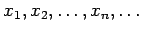
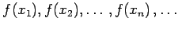

Inhalt Index DeskTop Bronstein

 Funktionen und ihre Darstellung Funktionsbegriff Grenzwert von Funktionen
Funktionen und ihre Darstellung Funktionsbegriff Grenzwert von Funktionen


Eine Funktion f(x) besitzt an der Stelle x=a den Grenzwert A, wenn für jede Folge von x-Werten , die innerhalb des Definitionsbereiches liegen und gegen a konvergieren, die zugehörige Folge der Funktionswerte  gegen A konvergiert.